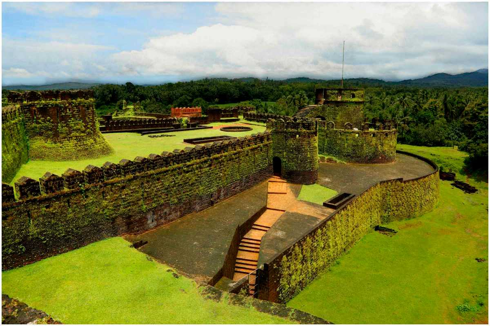
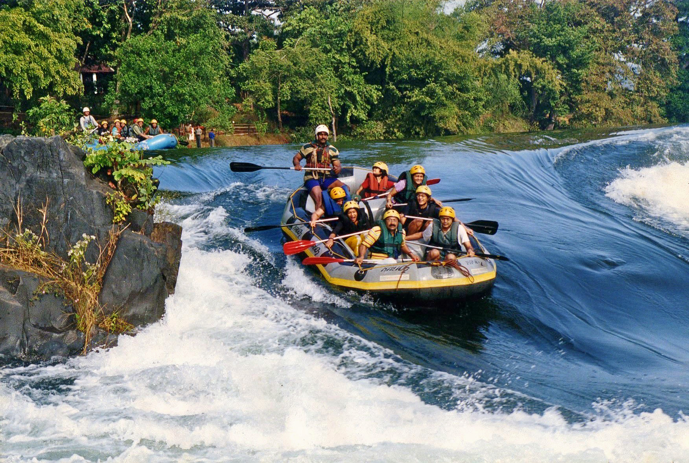
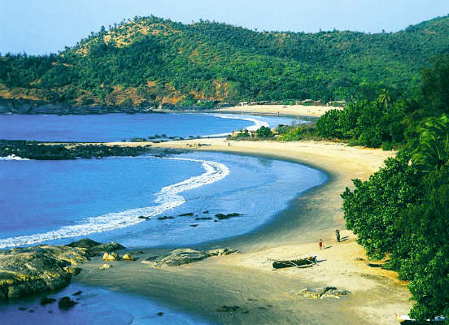
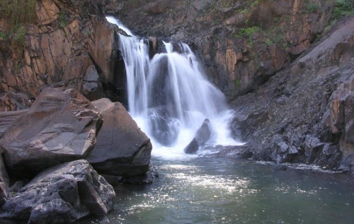
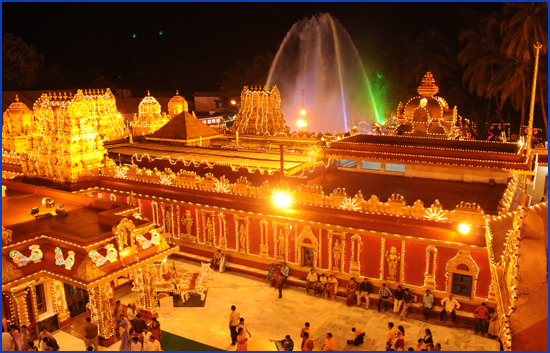
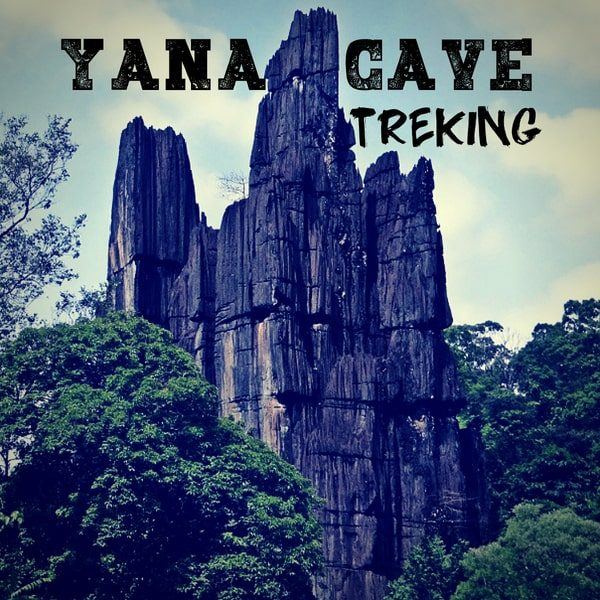

TourKarnataka.com
TOURIST PLACES IN UTTARA KANNADA
MIRJAN FORT

The Mirjan Fort is located on the west coast of the Uttara Kannada district in the southern Indian state of Karnataka. The fort known for its architectural elegance was the location of several battles in the past.
This interlinking is said to be a part of a defense mechanism used to protect the fort from external attacks. Thus, the fort has been a site of many battalions within its periphery and yet withstood the test of time.
According to the first historical version, Queen Chennabhairadevi of Gersoppa (under the Vijayanagara Empire) was initially credited with building the Mirjan Fort in the 16th centuryThe Mirjan Fort is flanked by the banks of Agnanishi River and is filled with high ceilings and bastions.
There are four main entrances to the fort, each of which is laid out with steps made out of laterite stone, which is the material used for constructing the rest of the fort too.
MURDESHWARA TEMPLE
 Murdeshwar is a town in Bhatkal Taluk of Uttara Kannada district in the state of Karnataka, India. The town is located 13 km from the taluk headquarters of Bhatkal.
Murdeshwar is a town in Bhatkal Taluk of Uttara Kannada district in the state of Karnataka, India. The town is located 13 km from the taluk headquarters of Bhatkal.
Murdeshwar is famous for the world's second tallest Shiva statue, the town lies on the coast of the Arabian Sea and is also famous for the Murdeshwar Temple.
Murdeshwar has a railway station on the Mangaluru-Mumbai Konkan railway route.
The Hindu gods attained immortality and invincibility by worshiping a divine Linga called the Atma-Linga. Lanka King Ravana wanted to attain immortality by
obtaining the Atma-Linga (Soul of Shiva).
Since the Atma-Linga belonged to Shiva, Ravana worshipped Shiva with devotion. Pleased by his prayers, Shiva appeared
before him and asked him what he wanted. Ravana asked for the Atma-Linga.
The entire temple and temple complex, including the 237.5-feet-tall Raja Gopura, is one among the tallest, was constructed to its present form by businessman and
philanthropist R. N. Shetty, who hails from Murdeshwar and whose ancestors served in the temple.
DANDELI WILD LIFE SANCTUARY

Along with neighboring Anshi National Park (339.87 square kilometres (83,980 acres)), the sanctuary was declared part of the Anshi Dandeli Tiger Reserve in 2006.
Karnataka state government has officially notified the Dandeli Elephant Reserve under Project Elephant on 4 June 2015. The elephant reserve is spread over 2,321 km2,
including 475 km2 as core and the remaining as buffer areas. This is the second elephant reserve in Karnataka after Mysuru Elephant Reserve, which was declared in 2002
Dandeli Wildlife Sanctuary is a birdwatchers paradise, housing nearly 200 species of birds,[3] most famous for the great hornbill (great Indian hornbill or great pied hornbill)
and the Malabar pied hornbill. It is also the only known tiger reserve in India to report frequent sightings of the elusive black panther.
The forests in Dandeli are a mixture of dense deciduous trees interspersed with bamboo and teak plantations. The sanctuary is rich in flora and fauna. Crocodiles are major wildlife
attraction in this sanctuary. It offers a unique experience of bird watching and crocodile spotting. you can walk through the forest or enjoy bird watching. There are a variety of reptilian
and amphibian species in and around the wildlife sanctuary. best time to visit march to october.
OM BEACH

Gokarna is famous for its beaches. The scenic beauty of the beaches encapsulated by the luscious greenery
on one side bordering the western Ghats is a mind-blowing sight to watch for.
The peaceful beaches are tourists delight. Every year thousands of tourists visit Gokarna for pilgrim
as well as to soak themselves on these beaches.
Om beach is popular beach providing boating facilities to tourists.
Om Beach is shaped as two semi crescents joined together forming the shape of Om (Hindu Symbol) hence the name Om beach.
Tourists can enjoy the banana boat, surfing, jet skiing etc. on this beach. The beach has a breathtaking view of the sunset.
For someone who loves the beach, Om beach is a must visit. The long stretch of white sandy beach adjoining the rocky terrain
is excellent and appealing to the eyes.
BURDE FALLS

Burude means the skull in Kannada (local language of Karnataka). This waterfalls is about 20+kms for Siddaput and 55kms from Sirsi on Siddapur-Kumta road.
One needs to trek through a small creek to reach the falls in summer. In winter and monsoon it becomes almost impossible to access the valley and falls.
Hundreds of people watch the spectacular view of waterfalls from an stage setting.
The mist adds to the scene. The other side of the waterfalls will need some serious climbing.
The last stretch of the water fall may be heard. This requires 2 day stay.
Best time to visit Burude falls in Karwar is winter and early summer.
The Burude Waterfall is also known as Illimane falls because it is formed of a rivulet called Illimane that flows down the Western Ghats,
descending in 5 different levels. Each level creates a separate waterfall ultimately forming a natural pool at the base. The atmosphere.
is pleasant during the tourist season and the trek is quite adventurous but is sure to be memorable.
The mystic views are enough to have you mesmerised and will want to keep coming back.
KUDROLI GOKARNATH TEMPLE

The Gokarnanatheshwara Temple, otherwise known as Kudroli Sri Gokarnanatha Kshetra, is in the Kudroli area of Mangalore in Karnataka, India. It was consecrated by Narayana Guru. It is dedicated to Gokarnanatha, a form of Lord Shiva.
This temple was built in 1912 by Adhyaksha HoigeBazar Koragappa.
The temple is 2 km from the centre of Mangalore city. The temple has Gopuram (tower like structure) decorated with murals of various gods and goddesses. Murals depict scenes from Hindu epics and legends
c
The Billava community traditionally warriors[1](chieftains/ soldiers specialized in archery in the army) and local medics wanted to carve a niche (a place of their own liking in terms of spiritual offerings)
for themselves in the realm of spirituality. It is in such a scenario that the community found a messiah in Narayana Guru to guide them in this spiritual quest
The temple observes many festivals. Maha Shivaratri, Krishnashtami, Ganesh Chaturthi, Nagara Panchami, Deepavali, Navaratri, Sri Narayana Jayanthi are celebrated with traditional gaiety and splendour.
It has worshipers from all over the world. The temples branches are in Mulki, Udupi and Katpady.
YANA

Yana is a village located in forests of the Kumta, Uttara Kannada district of Karnataka, India which is known for the unusual karst rock formations
Yana is famous for these two massive rock outcrops known as the Bhairaveshwara Shikhara and the Mohini Shikhara ("Shikhara" means "hill").
The huge rocks are composed of solid black, crystalline karst limestone.
During annual festivities held here during the Shivaratri, a car festival is also held. The place and surrounding hillocks are also known for ever green scenic forest.The two rock monoliths or hillocks, surrounded by thick forests and streams,
rise sharply above the surrounding area near Yana village. They are part of the Sahyadri hill range in the Western Ghats in South India and give a conspicuous identity to Yana and the entire hill range.
In the first rock hill, Bhairaveshwara Shikhara, there is 3 metres (9.8 ft) wide opening in the rock face that leads into a cave.